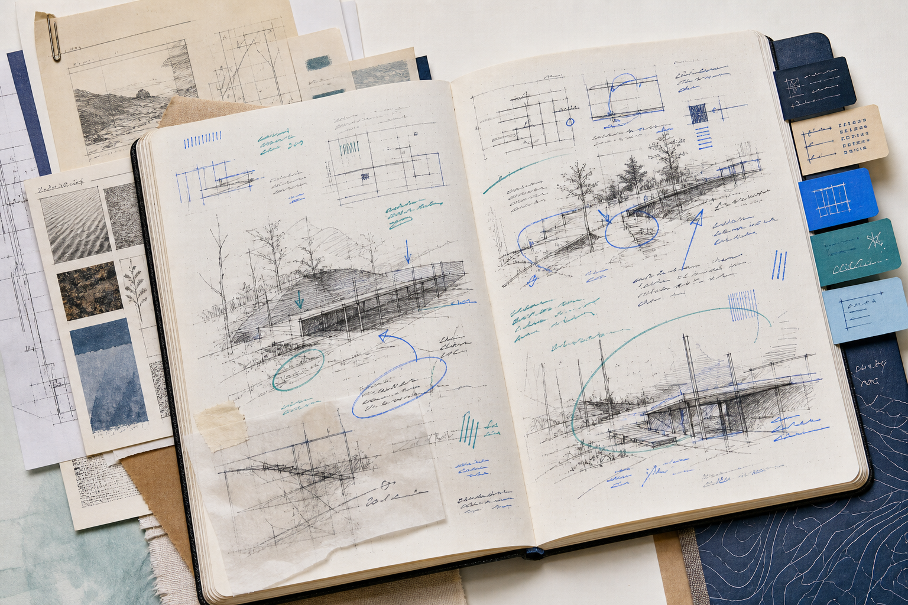

The MyTA assignment loop
The assignment becomes a shared learning surface.
Set the assignment contextCourse materials, learning goals, support rules
Guide the work, not the answerAttempt, explain, check, revise
See where support is neededSignals return to instructor judgment